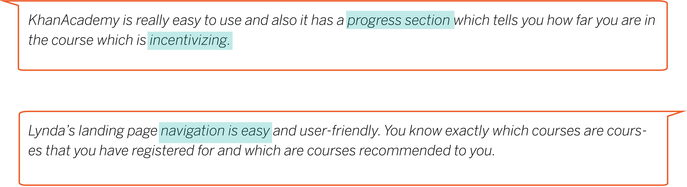

For my internship at ASM Research, I worked on a 4-month project with the UX team to design a website under one of ASMR’s major departments, MEDCHART( Medical Electronic Data Care History and Readiness Tracking). I designed an E-University to centralized a learning space at MEDCHART by providing direct lessons and official government required assessments in one space. The contract had not officially started, so I was unable to perform formal user surveying and interviews. However, with the resources I obtained, I underwent a UX design process to create a Mid-Fidelity prototype to propose to head of MEDCHART.
Overview
My Team
Year & Duration
Tools
My Roles
Overall Process
• 1) Research • 2) Identify Problem Areas and Solutions • 3) Ideation & Sketching • 4) Low Fidelity • 5) Prototyping • 6) Validation
Rising Action
Research
Client Requirements
For Whom?
Army National Guards (ARNG)
Army Reserve
Purpose of Tool
To maximize the efficiency of MEDCHART application usage.
Central Problems to Address
1.
Currently no electronic system that provides MEDCHART users access to CBT (Computer Based Training)
2.
The current HIPAA CBT system is restricted to HIPAA CBT training and does not support CBT expandability.
Base Required Components
Trainee User
- Registration confirmations
- Training alerts/notifications
- Training certificates
- Enrollment Capacity
- Waitlist Feature during enrollment
Managerial Controls
- Pre-recorded training videos
- Training enrollment roster
- Progress Tracking
- Statistical reporting, survey reporting,training certificates, ability to fit live training object without the need of a formal release
*Roster = Officially name for a course
User Surveying on ASM-U* and other similiar tools
- What are your opinions on the interfaces/usability of the ASM-U interface?
- What are parts of the website you think could be improved on?
- What do you like about your favorite E-University (i.e. KhanAcademy, Udemy, Lynda, etc.) 
*ASM-U is a E-University platform currently used by ASM employees to get required employee coursework completed. The concept of ASM is very similair to what MEDCHART-U will be.

"Problem Scope"
- Many users of similiar E-Universities address the issue of redundancy and unnecessary pages which contributed to the confusion of navigation.
- A E-University should be geared to one user. (Personalized)
- User Progress Tracking creates incentive, encourages user-friendliness, and provides a sense of direction for users.
- The navigation from start to completion of a roster should be clear and easy to follow through.
Goal
- To maximize the usage of each page in order to reduce the repetition of information on different pages.
- To create a personalizable interface which informs users of their progress on their rosters and requirements.
Ideation
Journey Maps
To lay out the foundation of the website, I created a high-level journey map which portrays the journey of the superusers: National Army Guards and the AMRG, to visualize the general navigation of the site.
Since my goal was not to redesign a pre-existing website, I did not include the user testing portions of the traditional journey map. Instead, I laid out possible thoughts the user may have to theorize a realistic sense of the user's journey through the website.

Falling Actions and resolution
Information Architecture
1st row: 4 Phases, 2nd row: Main pages, 3rd row: Components, 4th row: Features.
With a general 4-step flow of the user's journey through the website, I began to settle on the physical pages that would correspond to each phase of the journey map.
Using sticky notes, I used the card sorting method to layout each level of MEDCHART-U's information architecture. The first row of this tree diagram structure are the 4 phases. As the tree branched out, each level became more specific.
Main Pages : Home Landing Page, Roster Catalog, Roster Overview, Roster, My Progress
Iterative Design Process
With the main pages settled, I worked with my team to decide on the best layout for each page.
To demonstrate the iterative design process, I will showcase the iterative process conducted on the Home Landing Page.
For the landing page, I decided on a two-column layout with the summarization of information on the left column and more detailed information on the right column.

First Prototype
Final Iteration Prototype

The changes I made between the first and the final iteration focused on reducing redundancy and confusion in terms of navigation. Specifically, having two routes to view notifications would lead to confusion as there would be no direct relationship between the nofitication bell and bar. Thus, removing the notification bar in the 1st iteration would reduce confusion.
Solution to the Goal
1. Simplification of the pages: How to reduce the number of pages and prevent duplicate pages with the same functions
Merged the two main pages: Roster Overview and the Roster Catalog into one page by using a shrink and expand feature so that users would not need to leave the roster results page when browsing the roster catalog.
Compression of pages: Joined the My Profile section with the My Progress into one page
2. Personlization: How to create incentive for users of MEDCHART-U? Where to implement progress tracking?
Provided progress tracking elements throughout the website.
Landing Page
Roster Overview
Roster
My Progress
Validation
Review from Manager
With the completion of the mid-fidelity prototype, my internship was coming an end. To conclude my portion of contribution to the MEDCHART-U website, I presented my work to the head of the MEDCHART department for critisim and feedback.

Final Thoughts and Reflection
Design is vital and sometimes it is an undermined step in the world of developement. There were definitely moments of frustration in which I didn't know how to progress my design with the strict restrictions placed on it. However, iteration after iteration and close analysis, I was able to find a design that our team believes to best suit the users and the situation, a design which satisfied the client and governmental requirement yet provided the most usabilty to the users.
Final Product: MEDCHART-U Mid Fidelity Prototype